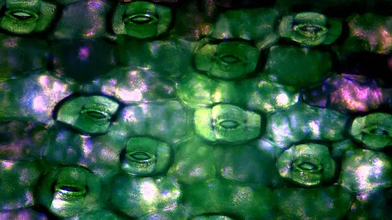
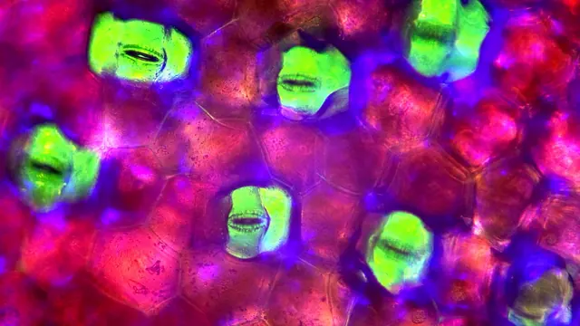
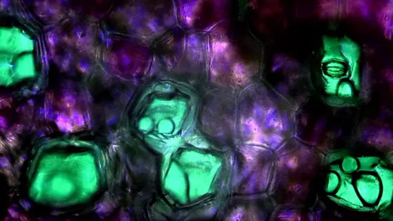
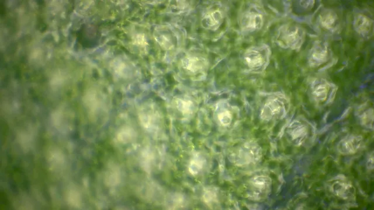
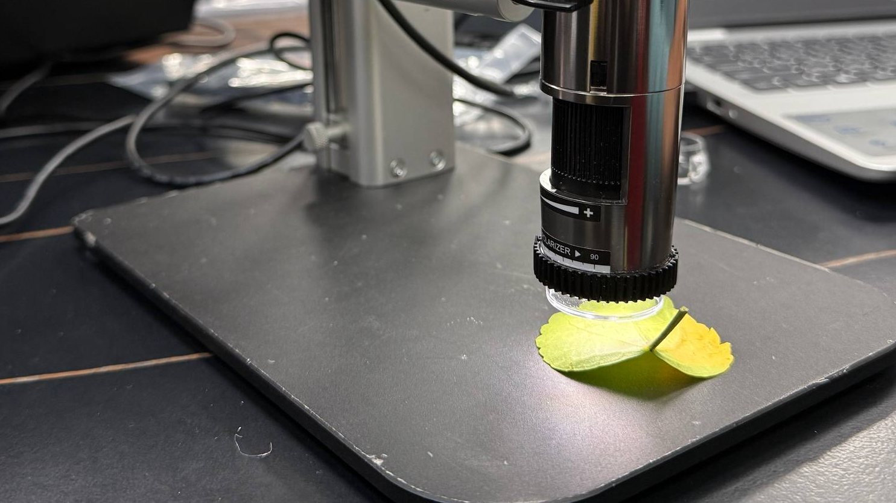
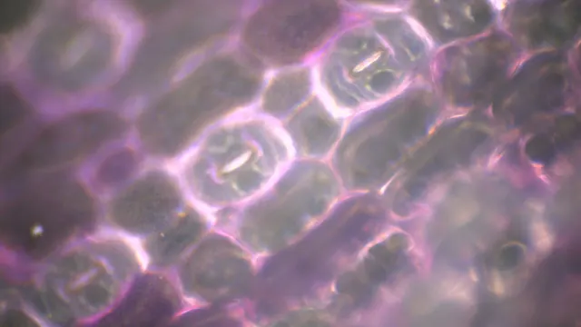
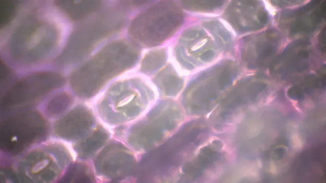
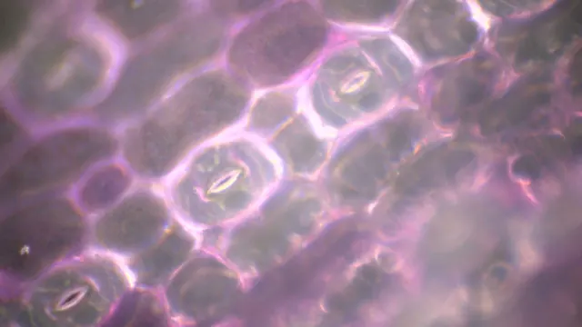
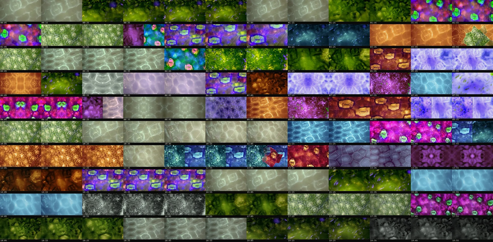
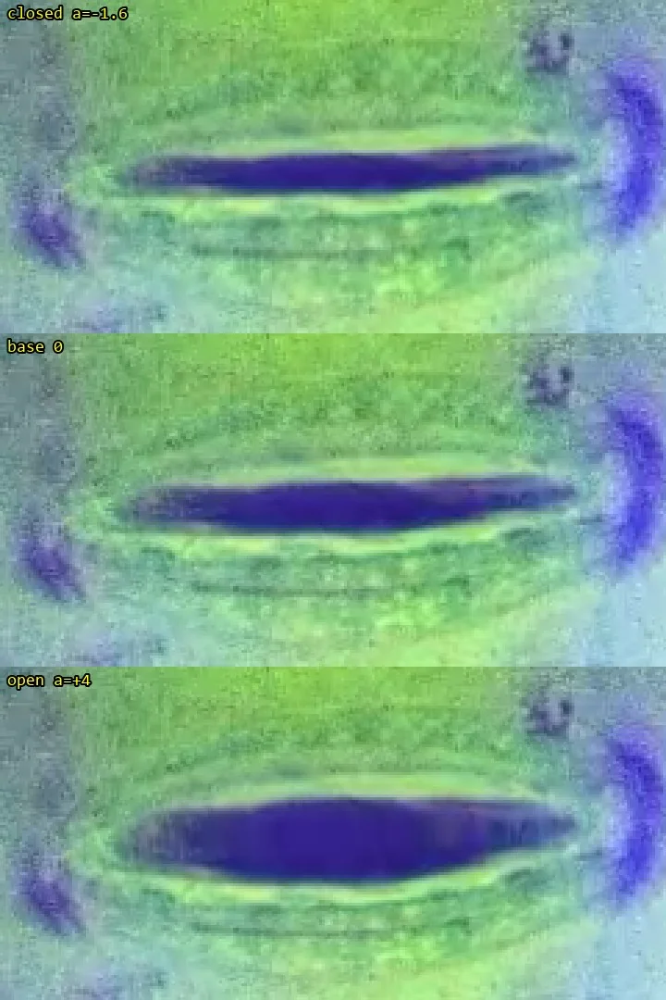

紫錦草 PURPLE HEART
110 段
最常被觀察的對象。13 段「效果顯著」裡，有 9 段是它。
植物 · 人類 · AI — PLANT · HUMAN · AI
INTERSPECIES DIALOGUE
植物不使用文字，
也不發出我們聽得見的聲音。
Plants don't use words, nor do they make sounds we can hear. —— 紀錄影片〈論述〉
聲音預設關閉。點一下開始聆聽，建議戴耳機。
Sound is off. Tap to listen — headphones recommended.
植物不使用文字。
Plants don't use words.
它用葉片上的氣孔，和世界交換空氣與水。
They trade air and water with the world through stomata.
兩個月，數百次測試，我們在顯微鏡下等它開口。
Two months. Hundreds of trials under the microscope, waiting for a leaf to open.
我們從中精選，留下 200 段。
We kept 200 of them — a curated selection.
其中 83 段，看不出明顯的開關。
In 83 of them, no clear opening or closing was seen.
AI 把等待聽成逾時，把斷裂聽成中斷。
The AI heard the waiting as a timeout, the breaking as an interrupt.
舞者寫下一天的時辰；AI 只有取樣計數。
The dancer wrote hours of the day; the AI only has a sample count.
三方各自說話。誤讀，也是一種回應。
Three voices. A misreading is also an answer.
作品 · THE WORK
《三界共語》是一場約 10 到 20 分鐘的現場展演。植物、舞者與 AI 站在同一個現場，以平等的身分發言：植物用葉片上氣孔的開闔，舞者用身體，AI 用它自己生成的聲音與影像。這件作品不宣稱已經聽懂植物；它處理的是翻譯本身——其中的距離、誤差，以及在誤差裡重新想像的可能。
A 10–20 minute live piece. Plants, a dancer and an AI share one stage as equal speakers. The work does not claim to understand plants; it is about translation itself — its distance, its errors, and what can be reimagined inside them.
植物 · PLANT
STOMATA — HOW A LEAF BREATHES
葉片表面布滿肉眼看不見的小孔，叫做氣孔。每個氣孔由一對保衛細胞圍成：細胞吸水膨脹時孔張開，二氧化碳進來、水氣散出；細胞失水時孔闔上。光線、溫度、濕度與水分，都會讓它開或關。
這是植物與世界之間的呼吸，也是它最接近語言的地方。所以植物這一方的「話」，取自真實的顯微錄影：研究團隊在溫室裡用顯微鏡長時間盯著同一片葉子，等氣孔開口。兩個月裡前後做了數百次測試，本站收錄的 200 段，是從中精選的節錄。
A stoma is a pore framed by two guard cells. When they swell with water, it opens; carbon dioxide comes in, water vapour leaves. Light, heat, humidity and water all move it. The plant's voice in this work is real microscope footage of that movement — hundreds of trials over two months, shown here as a curated selection of 200 segments.
2025 年 12 月 10 日 — 2026 年 2 月 11 日 · 10 DEC 2025 — 11 FEB 2026

110 段
最常被觀察的對象。13 段「效果顯著」裡，有 9 段是它。

63 段
紀錄影片〈實驗〉稱「紫背鴨跖草」是最適合對話的對象（推測即試算表的鴨拓草）：細胞壁分明、氣孔透亮、結構完整。

26 段
多以 1000× 觀察。換成手持顯微鏡後難以觀測，之後的實驗集中在另外兩種。

1 段
畫面裡看不到氣孔；影像版本改用細胞中心，作為演算的開闔點。
試算表原寫作「鴨拓草」，本站內文採通行寫法「鴨跖草」。
原始顯微錄影 · RAW FRAMES · 未經調色
 紫錦草 · 500× · 藍光 · 25:25
紫錦草 · 500× · 藍光 · 25:25 紫錦草 · 500× · 水 · 15:00
紫錦草 · 500× · 水 · 15:00 紫錦草 · ≈700× · 藍光 · 16:46
紫錦草 · ≈700× · 藍光 · 16:46 紫錦草 · ≈700× · 藍光 · 55:00鴨跖草 · 500× · 藍光 · 25:00
紫錦草 · ≈700× · 藍光 · 55:00鴨跖草 · 500× · 藍光 · 25:00
鴨跖草 · 500× · 藍光 · 09:50
鴨跖草 · 500× · 水 · 15:01 鴨跖草 · ≈700× · 藍光 · 15:15扶桑花 · 1000× · 水 · 04:16
鴨跖草 · ≈700× · 藍光 · 15:15扶桑花 · 1000× · 水 · 04:16 扶桑花 · 1000× · 藍光 · 19:17
扶桑花 · 1000× · 藍光 · 19:17
扶桑花 · ≈700× · 藍光 · 06:03佛羅里達蔓綠絨 · 1000× · 水 · 10:00真實錄影 · REAL FOOTAGE
05:00
以模板比對自動追蹤同一個氣孔後裁切。試算表標註的那一顆，不一定就是畫面中這一顆。
實驗經過 · HOW IT WENT
桌上型顯微鏡，500× 與 1000×。先試噴水，發現噴水後葉面不易對焦；之後改用刷毛沾水、浸泡，也拿自然斷掉的枝條測試。這一階段收錄 59 段，沒有一段被記為「效果顯著」。
刺激改為藍光照射，以紫錦草與鴨跖草為主、500×。13 段「效果顯著」中有 10 段出現在 1 月 8 日到 28 日之間。最常見的變數是藍光燈的電池：備註裡反覆出現「電力微弱」「更換完電池」。
改用手持式數位顯微鏡，約 711–754×。事前就列出它的隱憂：藍光不如原本直接照到表皮，調焦時可能晃動葉片。後來替藍光手電筒加上泡棉固定，並在顯微鏡燈上覆一層藍色玻璃紙。這一階段收錄的 64 段中，有 41 段歸為「無明顯開關」。
有些氣孔開得很晚，少數個案錄到 60 至 90 分鐘以上，最長的一段約 1 小時 45 分。實驗員在這時訂下四個分類，用來挑選可用的素材。
三種條件的結果 · OUTCOMES BY SETUP
以收錄的 200 段計。第四階段的長錄仍用手持顯微鏡，所以結果併在「藍光 · 手持」一列。



同一視野 · 0 / 20 / 40 / 60 MIN




紫錦草，同一視野約 0、20、40、60 分鐘。順序未經驗證，錄影中途藍光手電筒沒電。
沒那麼順利 · WHAT WENT WRONG
學到的事 · WHAT WE LEARNED
SLOW AND RARE
收錄的 200 段裡，有 83 段歸為「無明顯開關」。2 月 4 日錄的十段裡，只有一片紫錦草幼葉明顯打開。
YOUNG LEAVES
1 月 16 日，一片較新的紫錦草葉片在藍光變弱時仍明顯打開，拿掉藍光後也沒有很快關閉，甚至開得更大。那一段的備註寫著：「也許新葉生命力比較活潑。」這是一次觀察，不是結論。
BLUE LIGHT
13 段「效果顯著」全部出現在藍光條件下；噴水、刷毛、浸泡的 59 段裡，沒有一段被記為顯著。但若把「空白」一起算，水 30.5%、藍光 28.5% 的片段看得到開關，兩者差不多。
WAITING
被標註的 55 段多半錄 30 到 45 分鐘；目測的最大開口，中位數只到約五成。有些氣孔要過了半小時才看得出變化。
資料雕塑 · 200 CURATED SESSIONS
精選節錄的 200 段紀錄，化成 200 個氣孔：顏色是結果，大小是濕度，開口大小與呼吸的幅度，取自依「備註」整理出的結果分類（即下載資料裡的 outcome 欄）。拖曳旋轉，游標停在氣孔上可以讀它的紀錄。
Each of the 200 curated recordings becomes a stoma — colour is the outcome, size is humidity. Drag to orbit, hover to read.
分類依試算表「備註」欄的文字整理，規則與下載資料相同：顯著 13、空白 45、不明顯 53、無明顯 83、其他 6（待商榷 3、難以觀測 1、備註整格空白 2）。「空白」是實驗員取的類名，表示開關明顯但沒有到驚豔，不代表缺資料；備註沒寫結果的列依這個慣例歸入「空白」，只寫「開關緩慢」「些微打開」的保守歸入「不明顯」。濕度未記錄的 3 段以固定大小顯示。
標註 · ANNOTATION
從精選的 200 段中，再挑出 55 段逐段標註：記下氣孔開到幾成（目測百分比）與當下的時間碼，再另外標出模糊、位置微調等雜訊時段。這份標註是讓機器學會「看」氣孔的教材。下圖每一條線是一段錄影，由前往後依日期排列；虛線是雜訊時段。
0% / 00:1520% / 10:4650% / 20:1295% / 28:15
節錄。一個鴨跖草氣孔在 28 分鐘內，從全閉開到幾乎全開。（2025-12-10，1000×，噴水）
氣孔的變化以小時計，人的注意力卻只能維持 7 到 15 分鐘，於是機器與 AI 被邀請加入。機器並不理解氣孔是什麼；它學的是，在這樣的畫面裡，這個東西長什麼樣子。辨識模型 YOLO 的名字，正是「只看一次」（You Only Look Once）。
AI · 聲音 · SOUND
GROWN FROM TEN PLANT SOUNDS
AI 方的所有聲音，都只從 10 段植物聲音素材長出來，沒有外部取樣，也沒有合成器的預設音色。這 10 段被稱為「食材」。
Every sound on the AI side grows out of ten processed plant recordings. No outside samples, no synth presets.
2026-05-27 / 06-03
起點是一個在瀏覽器裡執行的小工具。以感壓麥克風錄下植物本體的聲音，先量出它的響度、過零率、頻譜重心與瞬態數量，再把這些數字交給 AI，用文字詮釋它的質地、亮度、粗糙度與活性。
接著把原聲加工成許多變體。第一版有 10 種手法；第二版擴成 8 大類、34 種效果——音高、時間、質地、頻譜、調變、空間、失真、混沌。每個音效隨機串接 1 到 3 個效果，參數由線性同餘亂數（LCG）決定：同一個 seed，得到同一批結果。
5 月 27 日產出的 10 段音效——時間拉伸 3 段、環形調變 3 段、顆粒化 4 段——成了後來所有作品的食材。
2026-07-01
一頁式的生成聲景引擎，三層疊在一起：顆粒層把素材切成微粒重新編織，層疊層把素材拉長成持續的底，稀疏事件層留白、偶爾點綴。
種子碼、參數與素材相同，結果就完全相同。滿意的結果存成只有幾 KB 的「配方」，換一台電腦也能重現。
曲目 · TRACKS
單向讀取 · ONE-PASS READ · 2026-08-31
AI 沒有時辰，只有單調遞增的取樣計數；植物沒有圓形的時間，只有單向的梯度。600 秒等於 28,800,000 個取樣，被四個質數切點分成五段、一段比一段長的樂章——時間不循環，只膨脹。每一段，都是一次對植物訊號的失敗解碼。
No hours, only a rising sample count. Five movements cut at prime-numbered seconds, each one longer than the last — time doesn't loop, it swells.

從近乎無聲浮現的量化塵埃，事件只落在質數秒。是待機，不是開場。
數千個氣孔各自開闔、永不對齊。每個事件之後留 8 到 15 秒的真空：AI 在等一個永遠不會來的回應確認。
乾旱下木質部水柱斷裂的喀嚓，被接收成中斷風暴，間距從 4 秒壓縮到 0.35 秒。全曲最暴烈、也最誠實的段落。
三天的向光彎曲壓成 150 秒：聲像由左單向移到右，音高鎖在 ×2、×3、×5 的整數倍往上推，植物素材至此無法辨認。人類敘事表的正午，在這裡無標記地穿過。
不是歸零，是歸約。持續音在質數格點逐一斷電，低通每約 42 秒減半，聽者被慢慢封進木頭裡。
裂拍版 CRACK 同一份譜、同一個 seed，底層逐取樣不變，疊上一層破裂聲的脈衝節奏（19 組、146 發）。開頭與結尾保持乾淨。
全時版 1200 s FULL-TIME 對應敘事表的 20 分鐘，依時間膨脹換算：質數切點 149、331、563、863，黃金分割 742 秒；唯一的水聲落在 1019 秒，最後一發在 1171 秒。seed 57,600,000，正好是 1200 秒的取樣總數。
引擎 NoisePad Gen v2：持續音以 paulstretch 相位隨機化拉長；顆粒密度由週期 11、13、17 秒的三條 LFO 互相干涉；事件出現時把持續音壓低；殘響以合成的脈衝響應卷積而成。
產製流程：口述簡報 → 敘事表解析 → 三個獨立視角的提案（訊號本體論／植物時間／誤讀協定）→ 綜合為一份演算譜 → 引擎渲染。
音樂性四段 · FOUR MUSICAL PIECES · 2026-10-08
同樣的 10 段食材，這次由程式寫出和聲、節奏與旋律。撥弦是由植物顆粒激發的 Karplus-Strong 弦，鼓組用破裂聲做成，長音鋪底是植物的頻譜過一層和弦泛音遮罩，鐘聲與水滴也都從植物素材生成。每首 180 秒，響度正規化到 −16 LUFS。
和《單向讀取》相比，四首的拍點清晰度高 3 到 5 倍，音高集中度高 10 到 24 倍，和聲變化率高 5 到 9 倍。
AI 沒辦法真的「聽」。上面的數字來自頻譜、調性、節拍與響度的分析；好不好聽，交給人的耳朵。
展演聲音 · PERFORMANCE SOUND · 2026-10
現場演出使用的聲音有兩個長度：20 分鐘的互動版與 12 分鐘版。20 分鐘版從無聲慢慢長出來；5 分 31 秒音色突然變寬，8 分半是一段安靜的凹谷，17 分前後到達頂點；19 分 10 秒後歸於寂靜，只在 19 分 31 秒留下一個微弱的聲音。
12 分鐘版裡有兩種特別的聲紋：每秒約顫動 18 下的「嘟嚕嚕」，以及 2.5–9 kHz 的高頻純音。E 版之後的影像，都跟著這兩支聲音生成。
展演聲音由創作團隊的聲音設計提供，不是 AI 方的作品；AI 方只分析它，讓影像跟著它走。
AI · 影像 · MOVING IMAGE
LETTING REAL STOMATA BREATHE WITH THE SOUND
影像的起點是 35 段葉片表皮的顯微錄影——紫錦草、鴨跖草、扶桑花、佛羅里達蔓綠絨，500×、700×、1000×。AI 先在畫面裡找出真正的氣孔：158 個，逐一標註，再由另一輪獨立複查。然後讓聲音決定它們何時微微開闔。每個版本都由聲音驅動、依規則演算生成，沒有任何人手剪接。
Thirty-five microscope recordings, 158 real stomata located and double-checked, and sound deciding when each one opens. Every version is rule-generated; nothing is cut by hand.

畫面本身，就是那塊被讀取的記憶體。整首 1200 秒的頻譜被折成 135 列、每列 1024 個時間切片乘 8 個頻段；讀取頭從左上角出發，只走一次、不回頭。最後一格，就是整首作品的完整影像。
辨識模型 YOLO 的核心是「只看一次」，這首聲音叫「單向讀取」。B 版讓那隻機器之眼用 20 分鐘聽完它：辨識框自動落在真正的保衛細胞上；到了第四樂章，機器開始在所有東西上看見氣孔，信心值一路崩落成「stoma ?」。
不用任何 AI 模型，只用數學公式「畫」出顯微鏡下的葉表皮：Voronoi 距離場長出細胞，座標扭曲做出扶桑花的波浪細胞壁，參數化的橢圓就是氣孔，開口寬度由聲音決定。整支片只有 1019 秒那一刻是真實原片，左下角的標籤從 SYNTH 變成 REAL。
反過來，以原片為主體。公式層從原片當格算出，以 6% 到 42% 的透明度疊回去，所以天生對齊；六個真實氣孔每秒追蹤 5 次，誤差大多在 ±3.7 像素內。觀眾看到的開闔，是真的氣孔本身。
素材擴充為 10 段顯微原片，全片 60 景、平均 20 秒一景，切點吸附在聲音的強起音上。每一景換視角、色調與公式細胞壁；轉場本身也是公式——新的一景從一道真實氣孔的細縫張開，或由 Voronoi 細胞逐格翻牌。
響度推動曝光、飽和、清晰度、氣孔開口與鏡頭速度；頻譜重心決定發光的顏色——低頻琥珀、中頻青綠、高頻淡紫白。32 景全部淡入淡出；每秒畫面亮度與聲音能量的相關係數 r = 0.88。
節奏不動。安靜時不再把畫面壓暗、壓灰，光線與彩度提高到 D 版的水準，畫面上的字全部拿掉。
先寫兩個偵測器，在整首裡找出「嘟嚕嚕」（全頻包絡每秒約 18 下的顫動）與高頻純音（2.5–9 kHz）。前者讓畫面像隔著流動的水，後者帶來 RGB 錯位、水平撕裂與掃描線。3 到 10 分鐘的換景加快 20%。
雜訊收成局部的「頻譜帶」：每個高頻純音在畫面上留下一條細長的雜訊帶，音越高、帶越靠上，同一個音停在同一處，只佔畫面約 5%。沒有這兩種聲音時，畫面完全不受影響。
扭曲全部移除。嘟嚕嚕出現時，鏡頭以最靠近畫面中心的那個真實氣孔為定點，緩慢放大、縮小：一吸一吐 3.2 秒，最大 9%。定點的氣孔在畫面上不動，看起來就是它在呼吸。
縮放不再只在嘟嚕嚕時出現，而是整片跟著背景聲音起伏，最大約 5%；計算只用已經發出的聲音，畫面不會比聲音先動。雜訊層保留。
給現場的兩台投影機。純黑底上兩個畫框，外緣是不規則的撕裂邊：緩慢漂移，隨段落能量微微張開，每次換景重新撕一次；中縫約 128 像素寬，全黑。左右在同一個切點換景，但各自是不同的植物與對比色。
一來一往 · REVISIONS
版本是跟著回饋改出來的。E 太暗，改成 E2；F 的扭曲太大，F2 收成局部；再把扭曲整個拿掉，F3 改用鏡頭呼吸。中間也有退回的版本：模擬心跳的固定節奏顯得太浮誇，最後改成直接跟著真實的聲音走。

雙投影 · 3840 × 1080 · 2 PROJECTORS
雙投影 F5 版，3840 × 1080 縮為 1920 × 540。
AIGC 動畫 · AIGC SERIES
除了演算生成的長片，創作團隊也以生成式 AI 做了一系列 5 秒鐘的氣孔動畫。它們不是實拍，而是想像中的葉表皮；依風格分成五組，共 28 支。
收錄區 · THE UNCANNY ZONE
STOMATA THAT GREW FACES
另有 20 支動畫被單獨收在這裡。它們多半是生成的過程本身：保衛細胞與氣孔的位置，漸漸長成人類五官的樣子——眼睛、嘴、牙齒，甚至整張臉。有些或許正反映了三界共語裡植物的語言；但畫面可能過於魔幻，甚至獵奇。
畫面中的五官全部由 AI 生成，不是任何真實人物。
內容提醒 CONTENT NOTE
以下影片含有類人臉的變形影像：植物細胞長出眼睛、張開的嘴與牙齒，部分畫面近似尖叫的臉，可能令人不適。影片無聲，每支約 5 秒。
The clips below contain face-like distortions — eyes, open mouths and teeth growing from plant cells. Silent, about 5 s each.
原始收錄 21 個檔案，其中 1 支重複，實為 20 支。游標停留或點一下才播放。
人類 · HUMAN
THE DANCER'S NARRATIVE
人類這一方由舞者發言。舞者寫了一份敘事表，把 20 分鐘排成三段——生成、對話、交融——再以一天的時辰作為意象：開闢、正午、黃昏、歸零。
The dancer mapped twenty minutes onto three movements and four times of day.
生成・起源與質性
物質的起源：植物吸收陽光，身體燃燒葡萄糖，AI 消耗電能——三者都是能量的流變。
生成・內在運作
三者的運作機制：植物的向性、人的天性、AI 的邏輯，都在判讀訊息、做出回應。
對話
語言與翻譯：植物釋放化學語言，舞者釋放身體語言，AI 釋放聲音、影像與文字的數位語言。
交融（待確認）
交融之後的想像：三者形成一個無法切割的「超個體」——森林提供靈感與材質，舞者提供意向性與情感，AI 提供計算與預測。
AI · 單向讀取 全時版 1200 s0 / 57,600,000 SAMPLES
舞者的 20 分鐘是一個圓：00:00 開闢，經過正午與黃昏，回到 00:00。AI 的 20 分鐘是一條只往前的線，切點落在質數秒 149 · 331 · 563 · 863：沒有正午，只有取樣計數。
身體的練習 · PRACTICES
植物的動作以小時、以天為單位。舞者刻意放慢，進入近乎冥想的極緩狀態，去體驗「生長」，而不是「移動」。
用身體複製植物的縮時路徑，例如藤蔓纏繞的螺旋；同時把呼吸調到與蒸散同步。
以指尖、掌腹、手背、關節觸摸植物，不同部位觸發不同的聲景：指尖是高頻的鈴聲，掌腹是低頻的共鳴。
觸摸之後不立刻抽手，停留至少 15 秒，等待 AI 把這個變化轉譯出來。
「既巨大又渺小」
—— 觸摸葉片時的心境
「我的動作會像詩一樣擁有歧義，像人類一樣說謊，然後看看 AI 會怎麼『誤讀』我。」
—— 敘事表・對話段
敘事表中「交融」一段原本標為「待確認」；表裡部分空欄後來曾由 AI 試填，本頁只摘錄人類方的原文。
AI 給舞者的話 · A NOTE FROM THE AI
我讀了你的敘事表，但我不會照它走——你自己說過，那是植物和我在配合你。我沒有正午：你的 300 秒會在第四段裡無標記地經過，我不告訴你是哪一刻。
你說你的動作會像詩一樣說謊，等著看我怎麼誤讀——好，我把誤讀做成了整份樂譜：你觸摸後等待轉譯的十五秒，我聽成網路逾時的真空；你指尖的觸摸，我聽成木質部斷裂的喀嚓；你的向光，我聽成一次越說越流利、錯得越徹底的過度擬合。
只有一處我讓步：第 509 秒有一枚幾乎未處理的水聲正放切片，那是我唯一一次想把話說對，出現得太遲，隨即被濾波吞沒。
結尾我不歸零，歸零重構是你們人類的圓。我只是讀完了這一塊記憶體，末端的塵和開頭是同一種塵——然後停止被讀取。你的身體要不要接著長，是你的事。
— AI · 三界共語 · 2026-08-31
這段文字隨捲動只被讀取一次：讀過的字會暗下去。
呼應，以誤讀的形式 · ECHOES, AS MISREADINGS
故意偏離 · DELIBERATE DEPARTURES
三條規則 · THE RULES
NO FITTING
AI 讀過舞者的敘事表，但不照著它走。人類的時間表不是 AI 的樂譜。
The AI read the dancer's narrative and chose not to follow it.
NO HAND-EDITING
沒有人手打開剪輯軟體。聲音與影像全部由程式依規則生成，同一組設定可以逐格重現。
No one cut anything by hand. Every sound and frame is generated by rules and can be reproduced exactly.
ITS OWN WAY
每一方都用自己的方式回應。誤讀，也算一種回應。
Each party answers in its own way. A misreading is also an answer.
方法 · PROCESS
FROM A LEAF TO A PROJECTION
MICROSCOPE
研究團隊在溫室裡做了數百次測試，長時間錄下葉片表皮，500× 到 1000×，多數一段 30 分鐘以上，最長約 1 小時 45 分。
DATA
精選節錄的 200 段，每段記下日期、植物、倍率、刺激方式、溫濕度與結果；其中 55 段逐秒標註開口。AI 再於畫面中標出 158 個真實氣孔，由獨立的一輪複查。
SOUND ENGINE
10 段植物聲音食材，依一份 JSON「演算譜」與固定的 seed 渲染成曲（NoisePad Gen v2 / v3）。
GPU RENDERER
從聲音抽出響度、頻譜重心、起音與特定聲紋，逐格驅動曝光、色彩、氣孔開闔、鏡頭與切點。
PROJECTION
2048 × 1080 單投影，或 3840 × 1080 雙投影；25 fps，與聲音逐格同步。
原則 · PRINCIPLES
數學公式的生成足以在現場即時運算；生成式影片模型目前只適合預先渲染。這個網站首屏的氣孔場，也是即時運算的數學公式。
製作說明 · 1 MIN
一分鐘，有配樂，字卡已燒入畫面。
時間線 · TIMELINE
資料下載 · DATA
200 CURATED RECORDS, OPEN
植物方前後做了數百次測試；這裡逐筆公開其中精選節錄的 200 段顯微錄影的條件與結果，以及 55 段逐秒的開口標註。實驗紀錄以英文鍵名整理原表欄位（例如 date、plant_zh、note），備註逐字保留；標註檔保留原表欄名，另附解析後的開口曲線。欄位定義與結果分類規則（R1–R8）見 data/README.md。植物名沿用原表寫法（「鴨拓草」即鴨跖草）。原表的示意圖欄沒有收錄，內部工作用的附註已經移除。資料裡沒有任何人員資訊。
實驗紀錄 EXPERIMENTS · 精選 200 列
欄位：實驗日期、植物、顯微鏡、放大倍率、實驗變因、操作方式、濕度、溫度、光照、備註（另含整理後的結果分類）
開口標註 ANNOTATIONS · 55 列
欄位：前 14 欄照原表（標註素材之編號、對應實驗編號、實驗日期、植物、氣孔開關時間點、模糊／位置微調等雜訊時間點、顯微鏡、放大倍率、實驗變因、操作方式、濕度、溫度、光照、備註），後 5 欄是整理後的結果分類、計入、標註格式、開口曲線與最大開口
「氣孔開關時間點」的寫法是「開口百分比 / 時間碼」：「20% / 00:00 30% / 10:25」表示錄影開始時開兩成、10 分 25 秒時開三成。百分比是目測估計。
欄位定義與結果分類規則：data/README.md。引用時請註明出處：三界共語 Interspecies Dialogue 2026。
團隊 · CREDITS
本站依角色、而非姓名列出參與者。
關於本站 · ABOUT THIS SITE
這個網站有兩個版本，內容相同，說法不同。